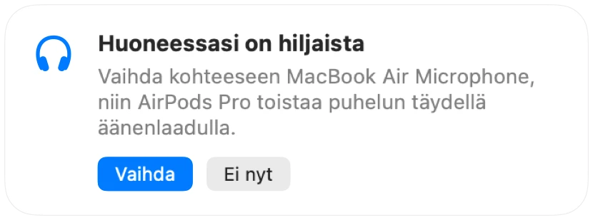

Miksi AirPods kuulostaa huonommalta Mac-puheluiden aikana
Kun liityt puheluun AirPods-kuulokkeilla, ääni muuttuu yhtäkkiä latteaksi ja tukahtuneeksi. Kyseessä ei ole vika. Kun sovellus käyttää AirPodsin mikrofonia, Bluetooth kytkee kuulokkeet puhelutilaan, joka toistaa kaiken huomattavasti heikommalla laadulla.
Ratkaisu on puhua Macin mikrofoniin ja antaa AirPodsin vain toistaa ääntä. Hiljaisessa huoneessa Macin mikrofoni kuulostaa aivan yhtä hyvältä, ja puhelu toistuu jälleen täydellä äänenlaadulla. Muffle huomaa, kun huoneessasi on hiljaista, ja ehdottaa vaihtoa.
Säilytä täysi äänenlaatu puheluissa
- 1
Asenna Muffle ja jätä asetus ”Ehdota huoneeseen parasta mikrofonia” päälle.
- 2
Liity puheluun AirPods-kuulokkeilla tavalliseen tapaan.
- 3
Kun Muffle ilmoittaa, että huoneessasi on hiljaista, napsauta Vaihda.
- 4
Jos ympäristö muuttuu myöhemmin meluisaksi, Muffle ehdottaa AirPodsin mikrofonia uudelleen.

- Vaihto toimii, kun puhelusovellus käyttää järjestelmän oletusmikrofonia. Valitse Google Meetissä, Zoomissa ja Teamsissa oletusvaihtoehto tai järjestelmän mukainen asetus.
- Pysy Macin lähellä, kun käytät sen mikrofonia. Muffle ehdottaa sitä vain silloin, kun se kuulee sinut selkeästi.
Kysymyksiä ja vastauksia
Miksi AirPods kuulostaa huonolta Mac-puheluissa?
Bluetooth ei pysty siirtämään laadukasta stereoääntä ja ääntäsi samanaikaisesti, joten AirPods siirtyy puhelutilaan aina, kun sen mikrofoni on käytössä.
Vaihtaako Muffle mikrofonin itsestään?
Ei. Muffle vain ehdottaa parempaa mikrofonia. Mikään ei muutu, ennen kuin napsautat Vaihda.